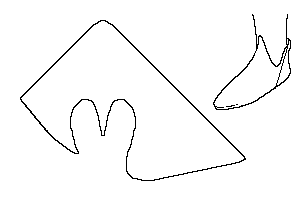

Peaked Shoe (c1250-1500)
This shoe, found in Konstanz,
resembles other, similar shoes listed in this work, such as the York
Peaked Shoe , the Basic Long Toed Shoe, and the Peaked Shoe .
This design is based on a description found in Schanck
Return to [Index] or [Next]
Footwear of the Middle Ages - Historical Shoe Designs/Number
69, by I. Marc Carlson. Copyright 1998
This page is given for the free exchange of information, provided the
Author's Name is included in all future revisions, and no money change
hands, other than as expressed in the Copyright Page.